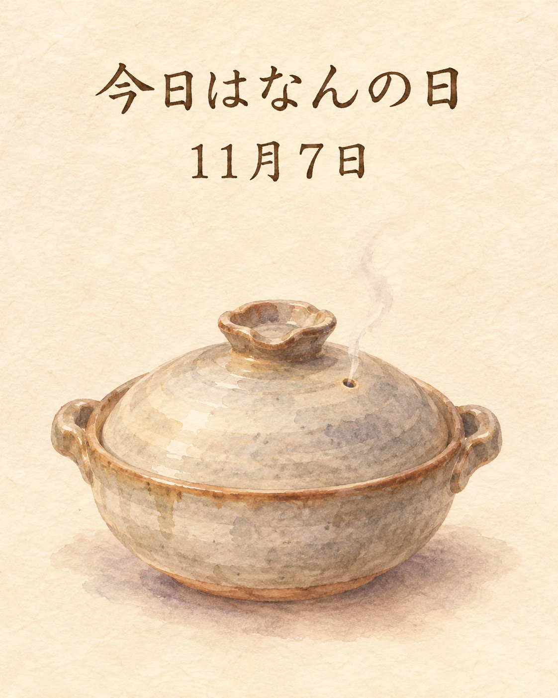

11月7日は「鍋と燗の日」です🍲
灘・伏見の酒造会社が参加する「日本酒がうまい！」推進委員会が、2011年に制定した記念日。温かい鍋と温かい日本酒を楽しむ食文化を広めるため、立冬の日に定められました。
2026年の立冬は11月7日。暦の上では、冬のはじまりです。
出汁の香りがふわりと立つ鍋と、温めることで表情を変える日本酒。料理とお酒の温度にも目を向けると、和食の楽しみが少し広がりますね。
季節の味わいとともに、心ほどけるひとときをお過ごしください✨
立冬と、日本酒を温めて楽しむ文化
「鍋と燗の日」は11月7日固定ではなく、毎年の立冬に合わせた記念日です。国立天文台の2026年暦要項では、今年の立冬は11月7日18時52分（日本時間）。京都・伏見の蔵元も伝えるこの記念日を通じて、料理と日本酒を温度から楽しむ日本の食文化に目を向けます。
この記事は季節と食文化の紹介です。当日の鍋料理や特定銘柄の入荷・在庫・提供、記念日に合わせた特別企画を案内するものではありません。
出典：月桂冠「立冬は鍋と燗の日」（制定の由来）、月桂冠「鍋と燗の日」（立冬との関係）、国立天文台「2026年暦要項」（立冬11月7日18時52分）、日本記念日協会（当日の認定記念日一覧）（2026年11月7日確認）。